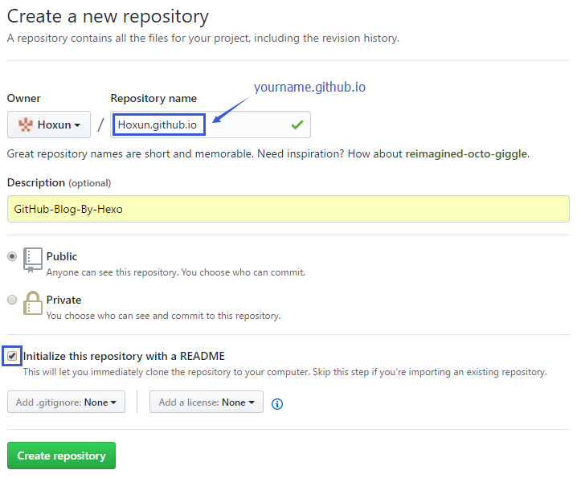
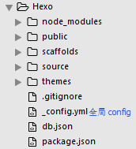
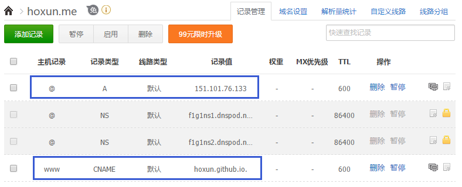

搭建环境
搭建本地博客
初始化 Hexo 文件夹
在任意文件夹下（如 E:\Hexo），右键，点击 Git Bash Here ，调出 Git 命令行，运行
$ hexo init安装依赖包
$ npm install本地查看
部署到 GitHub
注册 GitHub 账号
GitHub 官网：https://github.com/
创建页面仓库
仓库名要和账号对应
格式：yourname.github.io
SSH 公钥配置
如果是第一次使用此 GitHub 账号，需要配置公钥
配置步骤查看文末参考博客配置站点文件（全局 _config.yml）
根目录下的全局 _config.yml 文件

123456# Deployment # 部署## Docs: https://hexo.io/docs/deployment.htmldeploy:type: gitrepository: https://github.com/hoxun/hoxun.github.io.gitbranch: master注意：
冒号 “:” 后面有一个空格
type 值自 3.0 版本后为 git，之前为 github
repository: 刚刚创建的 github 仓库地址（repo == repository）
Error:
Error: remote: Permission to hoxun/hoxun.github.io.git denied to ...原因：一台电脑多个 GitHub 账号
解决：把仓库地址换为 SSH 形式的地址
1repository: git@github.com:Hoxun/Hoxun.github.io.git更多 config 配置可查阅官方文档：https://hexo.io/docs/configuration.html
Hexo 部署
生成静态文件
$ hexo generate部署到线上仓库(.deploy_git 文件夹)
$ hexo deployError:
ERROR Deployer not found: git原因：缺少部署插件
解决：安装插件。执行以下命令
$ npm install hexo-deployer-git --save
重新 deploy 即可以下提示说明部署成功：
INFO Deploy done: git访问 GitHub 博客页面
点击 GitHub 上项目 Settings，下滑，在 GitHub Pages，提示：
Your site is published at https://hoxun.github.io/在浏览器访问：https://hoxun.github.io/，即可打开线上博客
绑定独立域名
将独立域名与 GitHub Pages 的空间绑定
在本地 source 文件夹下，新建一个名为 CNAME 的文件，里面写入要绑定的域名（比如 hoxun.me），重新部署。域名需要先去域名服务商购买
DNS设置
在 DNSpod 平台或其他购买域名的平台进入到域名解析界面

CNAME 类型的记录值指向 GitHub 注册的仓库名（hoxun.github.io）
A 类型的记录值指向的 IP 地址是 GitHub Pages 提供的 IP查看 GitHub Pages 提供的 IP 的方法：
在命令行运行：
$ ping hoxun.github.ioGitHub Pages 提供的 IP 会改变，为保障独立域名的正常访问，要及时修改 DNS 解析的 IP 地址
Hexo 常用命令
|
|
简写
|
|
Another
- 自行替换文章中的 hoxun 为你喜欢的名字；
- 命令行最好使用 Node.js 或 Git 命令行，不要使用 Windows 自带的 cmd；
- 博客正文使用 Markdown 语法书写；
- 图床推荐使用 七牛云存储，有 10G 免费空间；
- 我使用的 NexT 主题，主题相关配置可查看官网文档，或我的另一篇博客 GitHub + Hexo + NexT 个人博客配置
- Hexo Seo优化让你的博客在google搜索排名第一；
- 动动手指，NexT主题与Hexo更搭哦（基础篇）；